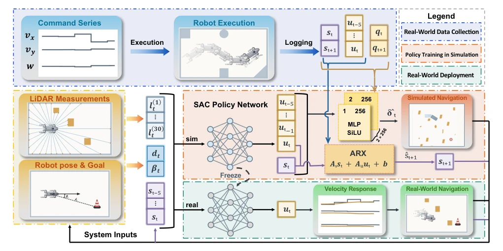
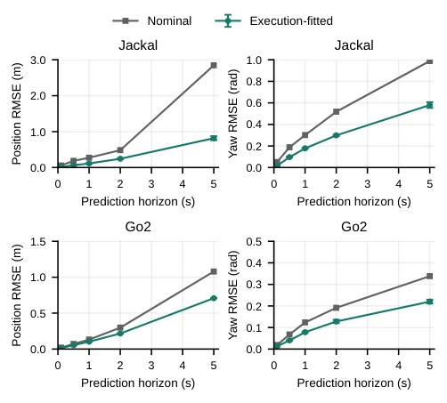
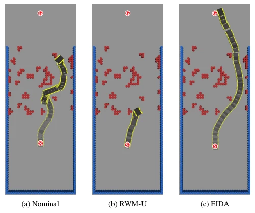
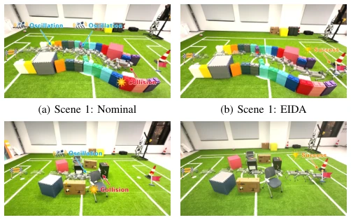
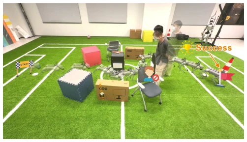

This paper proposes a 'lightweight' solution for Sim2Real navigation. Rather than persisting with high-fidelity physics engines, it directly utilizes real robot data to 'wrap' the simulator. The core of EIDA lies in treating the 'execution interface' as a black-box fit, modifying both geometry and feedback. Although it does not reconstruct underlying actuator dynamics, the performance is indeed impressive; the Go2 real robot passed all tests, significantly outperforming baselines. However, this method, which relies on fitting data from specific platforms, raises questions about generalization; would it require retraining if the chassis changes? Furthermore, uncertainty modeling is not addressed; if real robot state estimation drifts, might the fitted model in the simulator drift accordingly? It is a pragmatic trick, but far from a general solution.
Navigation policies perform well in simulation but are prone to crashes or drift on real robots; the core issue lies in the mismatch between velocity commands and actual motion/feedback. Existing works mostly rely on dynamics randomization [7], [8] to enhance robustness, or attempt to reconstruct detailed actuator dynamics [13], [14], but the latter incurs high computational costs and does not necessarily improve transfer performance. Truong et al. [9] noted that simple motion model fitting might outperform complex simulation, yet they did not clearly distinguish between geometry state updates and feedback visible to the policy. This paper aims to address: Can navigation transfer be improved without reconstructing underlying actuators, solely by fitting the execution interface (motion increment + velocity feedback)? This directly targets trajectory deviation issues caused by low-level controller latency and response discrepancies.
The overall workflow is divided into three steps: data collection, model fitting, and policy training and deployment. First, real robot execution data (commands, pose, velocity estimate) are collected. Next, two independent models are fitted: 1) Pose increment model (MLP), which takes command history as input to predict displacement and yaw in the body frame, directly updating the simulator's geometry state; 2) Velocity feedback model (ARX), which predicts velocity feedback observable by the policy, retaining temporal dependencies. During training, these two models are embedded in a lightweight GPU parallel simulator, replacing the original motion model. The policy input includes recent velocity history to capture execution response. During deployment, the fitted models are removed, and real robot sensors and controllers are used directly, while maintaining the policy input structure unchanged. This separation design avoids reconstructing underlying physics, adapting only to dynamics at the navigation interface level.
Validated on Jackal and Go2 platforms. Simulation uses 100 BARN environments, comparing DWA, E-Band, RWM-U, and Nominal baselines. Metrics include Success Rate (SR), Collision Rate (CR), and Navigation Score. EIDA achieved an SR of 89.33% in simulation, significantly outperforming RWM-U (73.78%) and Nominal (80.78%). On the real robot Go2, the static scene achieved 20 successful trials, whereas the baseline achieved only 4. Ablation experiments indicate that motion model fitting, velocity history input, and ARX feedback are all indispensable. Specifically, ARX feedback outperforms pose-derived velocity, demonstrating the necessity of modeling geometry and feedback separately. It also robustly avoids obstacles in dynamic scenes.
其他图片Other Figures

Fig. 2. Execution-interface dynamics adaptation (EIDA). Target-system execution data identify independent pose-increment and velocity-feedback models. The execution-fitted interface supports policy training in simulation; at deployment, live sensing and the existing controller replace the fitted responses.

Fig. 3. Pose-prediction accuracy on the Jackal and Go2 validation sets. Curves show mean endpoint RMSE over the prediction horizon; error bars indicate one standard deviation across three pose-model seeds.

Fig. 5. Trajectories of the robot controlled by (a) Nominal, (b) RWM-U, and (c) EIDA in one of the 100 BARN testing environments. “S” represents the starting point, and “G” represents the target point. The corresponding videos are provided in the supplementary material.

Fig. 6. Physical Go2 navigation in two static scenes. Panels (a)–(d) compare the Nominal baseline with EIDA; a dynamic scenario in which a pedestrian suddenly obstructs the path is shown separately in Fig. 7.

Fig. 7. Go2 navigation with EIDA in Scene 2 when a pedestrian suddenly obstructs the path. Overlaid robot and pedestrian poses illustrate the motion sequence toward the marked goal. This demonstration is separate from the static-scene trials in Table III.